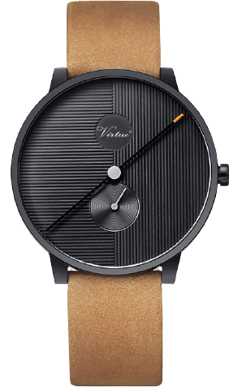

popular
Models

Son22
The watch also features a tough and durable sapphire crystal glass and comes with a Swiss SW200-1 automatic winding movement that has a power reserve

Sw12
The watch also features a tough and durable sapphire crystal glass and comes with a Sw12-1 automatic winding